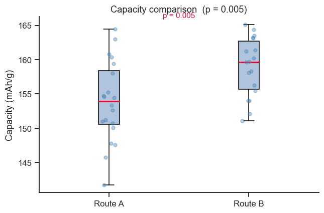
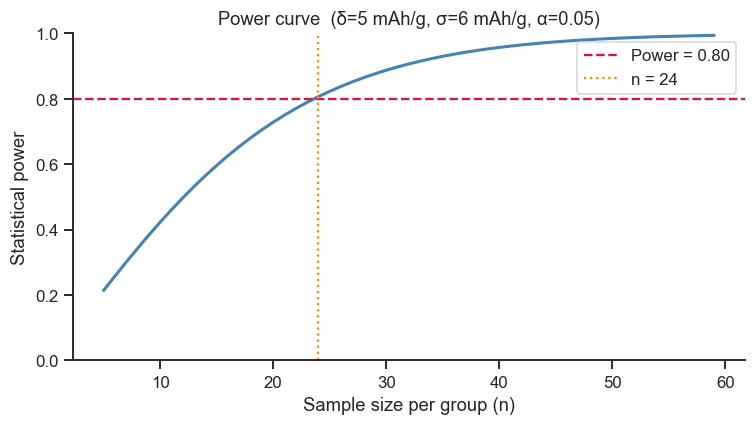

8. Hypothesis Testing#
Hypothesis testing provides a formal framework for deciding whether an observed difference is likely to be real or just due to random chance.
Topics
Framework: H₀, H₁, p-value, α, Type I and II errors
One-sample t-test
Two-sample independent t-test
Paired t-test
Non-parametric alternative: Mann-Whitney U
Statistical power and sample size planning
import numpy as np
import pandas as pd
import matplotlib.pyplot as plt
import seaborn as sns
from scipy import stats
from statsmodels.stats import power as smp
sns.set_theme(style='ticks', palette='colorblind')
plt.rcParams.update({'figure.dpi': 110, 'font.size': 11})
rng = np.random.default_rng(77)
8.1 The Framework#
Term |
Definition |
|---|---|
H₀ (null hypothesis) |
No effect; the groups are equal |
H₁ (alternative) |
There IS an effect |
p-value |
Probability of observing data at least as extreme as ours, if H₀ were true |
α |
Significance threshold (commonly 0.05) |
Type I error |
Reject H₀ when it is true (false positive), probability = α |
Type II error |
Fail to reject H₀ when H₁ is true (false negative), probability = β |
Power |
1 - β — probability of correctly detecting a real effect |
Interpretation: p < α means the data are unlikely under H₀ — we reject H₀.
p-value does not tell you the probability that H₀ is true.
8.2 One-Sample t-Test#
Question: Has the hardness of our steel changed from the specification of 200 HV?
This is the simplest possible hypothesis test: compare one batch’s average against a single known target value. \(H_0\) says “the true mean equals the spec (200 HV) — any difference we see in our 15 samples is just noise.” The t-statistic measures how many “standard errors” the sample mean is away from that target (Section 2 of the theory page); the further away, the less plausible \(H_0\) becomes.
# 15 hardness measurements from a new batch
hardness = rng.normal(loc=207, scale=12, size=15) # true mean slightly above spec
mu_spec = 200 # specification value (HV)
t_stat, p_val = stats.ttest_1samp(hardness, popmean=mu_spec)
print(f'Sample: n={len(hardness)}, mean={hardness.mean():.2f}, std={hardness.std(ddof=1):.2f} HV')
print(f'Test: H₀: µ = {mu_spec} HV vs H₁: µ ≠ {mu_spec} HV (two-tailed)')
print(f' t = {t_stat:.4f}, p = {p_val:.4f}')
if p_val < 0.05:
print('Conclusion: Reject H₀ — mean hardness is significantly different from 200 HV (α=0.05)')
else:
print('Conclusion: Fail to reject H₀ — no significant difference at α=0.05')
# Confidence interval for the mean
ci = stats.t.interval(0.95, df=len(hardness)-1,
loc=hardness.mean(), scale=stats.sem(hardness))
print(f'95% CI for µ: ({ci[0]:.2f}, {ci[1]:.2f}) HV')
Sample: n=15, mean=207.06, std=15.54 HV
Test: H₀: µ = 200 HV vs H₁: µ ≠ 200 HV (two-tailed)
t = 1.7608, p = 0.1001
Conclusion: Fail to reject H₀ — no significant difference at α=0.05
95% CI for µ: (198.46, 215.67) HV
Take-home message
p=0.10 is bigger than α=0.05, so we fail to reject H₀ — but look at the sample mean: 207.1 HV, clearly above the 200 HV spec. This is not a contradiction: with only n=15 and a fairly noisy batch (s=15.5 HV), the data are simply not conclusive enough to prove the mean has shifted, even though it looks shifted. “No significant difference” means “not enough evidence,” never “proven equal.”
The 95% CI (198.5, 215.7 HV) makes the same point more honestly than the p-value alone: it comfortably includes both 200 HV (the spec) and values well above it — the data are consistent with the batch being on-spec, above-spec, or anywhere in between. More samples would narrow this range and could well flip the conclusion.
8.3 Two-Sample Independent t-Test#
Question: Do two synthesis routes produce electrodes with different specific capacities?
Now we compare two independently measured groups rather than one group against a fixed target. Before trusting the standard t-test, it’s good practice to check whether the two groups have similar variability (Levene’s test below) — if one route is much noisier than the other, a variant called Welch’s t-test (which doesn’t assume equal variances) gives a more reliable answer. This is a design choice worth making before looking at the p-value, not after.
route_A = rng.normal(155, 6, 20) # mAh/g
route_B = rng.normal(160, 5, 18) # mAh/g
# Levene's test for equal variances (a prerequisite check)
W_lev, p_lev = stats.levene(route_A, route_B)
equal_var = p_lev > 0.05
print(f'Levene test: W={W_lev:.3f}, p={p_lev:.3f} → {"Equal" if equal_var else "Unequal"} variances')
# Two-sample t-test (Welch's if unequal variances)
t_stat, p_val = stats.ttest_ind(route_A, route_B, equal_var=equal_var)
print(f'\nRoute A: mean={route_A.mean():.2f}, std={route_A.std(ddof=1):.2f}, n={len(route_A)}')
print(f'Route B: mean={route_B.mean():.2f}, std={route_B.std(ddof=1):.2f}, n={len(route_B)}')
print(f"Test: {'Student' if equal_var else 'Welch'} t-test, t={t_stat:.4f}, p={p_val:.4f}")
if p_val < 0.05:
print('→ Significant difference between routes at α=0.05')
else:
print('→ No significant difference at α=0.05')
# Effect size: Cohen's d
pooled_std = np.sqrt(((len(route_A)-1)*route_A.var(ddof=1) +
(len(route_B)-1)*route_B.var(ddof=1)) /
(len(route_A)+len(route_B)-2))
cohens_d = (route_B.mean() - route_A.mean()) / pooled_std
print(f"Cohen's d = {cohens_d:.3f} ({'small' if abs(cohens_d)<0.5 else 'medium' if abs(cohens_d)<0.8 else 'large'} effect)")
Levene test: W=1.363, p=0.251 → Equal variances
Route A: mean=153.85, std=5.93, n=20
Route B: mean=158.94, std=4.31, n=18
Test: Student t-test, t=-2.9976, p=0.0049
→ Significant difference between routes at α=0.05
Cohen's d = 0.974 (large effect)
Take-home message
Levene’s test passes (p=0.25) so the standard (pooled-variance) t-test was the right tool here, not Welch’s — the two routes are equally noisy, just centred differently.
p=0.005 says the 5.1 mAh/g gap between routes is very unlikely to be random noise; Cohen’s d=0.97 says that gap is also large in practical terms (rule of thumb: d>0.8 is a large effect). When both agree like this, the case for switching processes is strong — it is when they disagree (tiny p-value, tiny d) that a result deserves more scepticism.
Effect size vs p-value: the p-value only tells you whether the difference is detectable given the amount of data you have — with enough samples, even a trivially small difference becomes “significant.” Cohen’s d instead measures how big the difference is, in standard-deviation units: it’s the difference between the two group means, divided by the (pooled) standard deviation, so it doesn’t grow just because you collected more data. Report both: the p-value answers “is this real?” and Cohen’s d answers “does this actually matter?”
fig, ax = plt.subplots(figsize=(6, 4))
ax.boxplot([route_A, route_B], tick_labels=['Route A', 'Route B'],
patch_artist=True,
boxprops=dict(facecolor='lightsteelblue'),
medianprops=dict(color='crimson', lw=2))
# Add individual points
for i, data in enumerate([route_A, route_B], 1):
ax.scatter(np.full(len(data), i) + rng.uniform(-0.05, 0.05, len(data)),
data, alpha=0.4, color='steelblue', s=20, zorder=3)
ax.set_ylabel('Capacity (mAh/g)')
ax.set_title(f'Capacity comparison (p = {p_val:.3f})')
ax.text(1.5, route_B.max() + 1, f'p = {p_val:.3f}', ha='center', fontsize=10,
color='crimson' if p_val < 0.05 else 'gray')
sns.despine(ax=ax)
plt.tight_layout()
plt.show()

8.4 Paired t-Test#
Use a paired test when the same sample is measured before and after a treatment (or when samples are matched, e.g. same substrate, different coating). The key insight: since each specimen is compared to itself, any differences between individual specimens (one happened to be slightly thicker, another slightly rougher) cancel out automatically — the test only looks at the change for each specimen, which makes it much more sensitive than treating “before” and “after” as if they were two unrelated, independent groups.
# Corrosion rate before and after surface treatment on 12 identical specimens
n = 12
before = rng.normal(0.45, 0.08, n) # mm/year
after = before - 0.12 + rng.normal(0, 0.04, n) # treatment reduces corrosion
t_stat, p_val = stats.ttest_rel(before, after)
diff = after - before
print('Paired t-test: corrosion before vs after surface treatment')
print(f'Before: mean={before.mean():.3f}, std={before.std(ddof=1):.3f} mm/yr')
print(f'After: mean={after.mean():.3f}, std={after.std(ddof=1):.3f} mm/yr')
print(f'Mean difference: {diff.mean():.3f} ± {diff.std(ddof=1):.3f} mm/yr')
print(f't = {t_stat:.4f}, p = {p_val:.4f}')
if p_val < 0.05:
print('→ Surface treatment significantly reduces corrosion rate (α=0.05)')
Paired t-test: corrosion before vs after surface treatment
Before: mean=0.448, std=0.087 mm/yr
After: mean=0.307, std=0.106 mm/yr
Mean difference: -0.141 ± 0.057 mm/yr
t = 8.5657, p = 0.0000
→ Surface treatment significantly reduces corrosion rate (α=0.05)
Take-home message
Corrosion rate dropped by 0.141 mm/yr on average (from 0.448 to 0.307), and t=8.57 with p≈0 leaves essentially no doubt this is a real effect, not noise — a p-value this small on only 12 specimens is only possible because pairing (Section 8.4) removed the specimen-to-specimen variability that would have diluted an unpaired comparison.
In relative terms the treatment cut corrosion by roughly 0.141/0.448 ≈ 31% — translating the raw mm/yr figure into a percentage is often the number that actually gets reported to a non-technical stakeholder.
8.5 Non-Parametric Alternative: Mann-Whitney U#
When data are not normally distributed (or the sample is very small), use the Mann-Whitney U test instead of the independent t-test. Rather than comparing means directly (which the t-test does, and which is sensitive to skewed data or outliers), Mann-Whitney pools both groups, ranks every observation from smallest to largest, and checks whether one group’s ranks tend to be systematically higher than the other’s — the same rank-based trick used by Spearman correlation (Notebook 6). It answers a slightly different but related question (“is one group’s typical value shifted higher than the other’s?”) and remains valid even when the data is skewed or has heavy outliers.
# Pitting corrosion depth — skewed distributions
alloy_1 = rng.exponential(scale=0.5, size=20) # mm
alloy_2 = rng.exponential(scale=0.7, size=20)
# Mann-Whitney U
U, p_mw = stats.mannwhitneyu(alloy_1, alloy_2, alternative='two-sided')
print(f'Mann-Whitney U: U={U:.1f}, p={p_mw:.4f}')
# Compare with (incorrect) t-test
_, p_t = stats.ttest_ind(alloy_1, alloy_2)
print(f't-test p-value (for comparison): {p_t:.4f}')
print(f'Data is non-normal (exponential) — Mann-Whitney is the appropriate test.')
Mann-Whitney U: U=158.0, p=0.2616
t-test p-value (for comparison): 0.3344
Data is non-normal (exponential) — Mann-Whitney is the appropriate test.
Take-home message
The two tests disagree on borderline significance (Mann-Whitney p=0.26 vs. t-test p=0.33) — both actually agree on the bigger picture, “no significant difference detected either way” — but the t-test’s p-value cannot be fully trusted here regardless of its value, since it assumes normality and this data is exponential (heavily right-skewed) by construction.
The lesson isn’t “Mann-Whitney gives a different answer” (it often won’t, as here) — it’s that checking the assumption first is what tells you which p-value you’re allowed to trust in the first place.
8.6 Statistical Power and Sample Size#
Power = 1 − β = probability of detecting a real effect of size δ. Plan your experiment so that power ≥ 0.8 (a common target).
# Sample size calculation for a two-sample t-test
# We want to detect a difference of 5 mAh/g with σ≈6 mAh/g
effect_size_d = 5 / 6 # Cohen's d
alpha = 0.05
target_power = 0.80
analysis = smp.TTestIndPower()
n_required = analysis.solve_power(effect_size=effect_size_d,
alpha=alpha,
power=target_power,
ratio=1.0,
alternative='two-sided')
print(f'To detect Cohen\'s d={effect_size_d:.2f} with power={target_power} at α={alpha}:')
print(f'Required n per group: {np.ceil(n_required):.0f}')
# Power curve: how does power change with n?
n_range = np.arange(5, 60)
power_curve = [analysis.solve_power(effect_size=effect_size_d,
alpha=alpha, nobs1=n, ratio=1.0,
alternative='two-sided') for n in n_range]
fig, ax = plt.subplots(figsize=(7, 4))
ax.plot(n_range, power_curve, 'steelblue', lw=2)
ax.axhline(0.80, color='crimson', ls='--', label='Power = 0.80')
ax.axvline(np.ceil(n_required), color='darkorange', ls=':', label=f'n = {np.ceil(n_required):.0f}')
ax.set_xlabel('Sample size per group (n)')
ax.set_ylabel('Statistical power')
ax.set_title(f'Power curve (δ=5 mAh/g, σ=6 mAh/g, α=0.05)')
ax.legend()
ax.set_ylim(0, 1)
sns.despine(ax=ax)
plt.tight_layout()
plt.show()
To detect Cohen's d=0.83 with power=0.8 at α=0.05:
Required n per group: 24

Take-home message
24 castings per group are needed to reliably (80% of the time) detect a difference as small as the 5 mAh/g the engineers care about — notice this is bigger than either sample size used in Section 8.3’s Route A vs. B comparison (n=20, n=18), which is exactly why that comparison’s larger, easier-to-detect effect (d=0.97 there vs. d=0.83 planned for here) was needed to reach significance with those smaller samples.
The power curve’s shape is the real lesson: power rises steeply at first, then flattens out well before n=60 — doubling an already-adequate sample size buys much less additional power than doubling a too-small one. Planning before collecting data avoids both wasting budget on an oversized study and running an underpowered one that can’t detect the effect you care about.
Exercises#
One-tailed test: Re-run the one-sample t-test from section 8.2 as a one-tailed test (H₁: µ > 200 HV). How does the p-value change?
Simulation study: Write a simulation that generates 1000 t-tests where H₀ is true (draw both samples from the same population). Count how many give p < 0.05. Does the Type I error rate match α = 0.05?
Sample size for tight tolerance: A new sintering process must hold density within 0.02 g/cm³ of the target 3.85 g/cm³. Historical data gives σ = 0.025 g/cm³. How many samples do you need to test whether the new process meets specification with 90% power at α = 0.01?